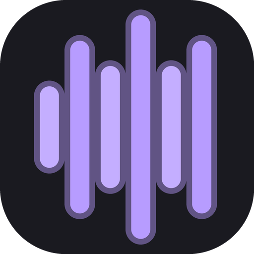
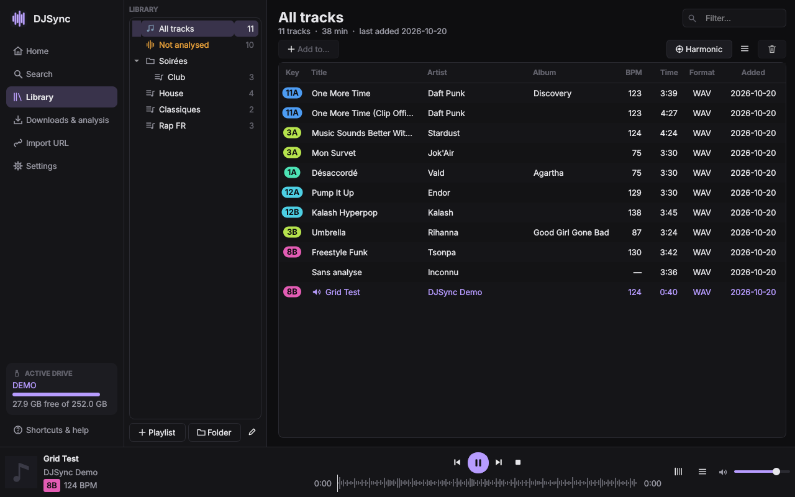

DJSync — free Rekordbox USB export for Pioneer CDJs, without Rekordbox
Download music, analyse BPM, key, beat grid and cues, and write a USB drive ready for Pioneer CDJ / XDJ — from a portable app that runs straight from the drive, on Windows, macOS or Linux. Free and open source, no account.

What it does
Find and download
YouTube Music search, links from YouTube, SoundCloud, Spotify and Deezer playlists, higher-quality sources.
Write the USB drive
Rekordbox library of the drive (OneLibrary and export.pdb) with waveforms, artwork and playlists.
Analyse without Rekordbox
BPM, beat grid, key in Camelot notation, hot cues, loops and memories you can edit.
Your computer too
Adds tracks to the Rekordbox collection of your computer (Rekordbox 6 / 7) while Rekordbox is closed.
Questions
How do I export music to a USB drive without Rekordbox?
Open DJSync from the drive, add tracks (download, import a link or your own files): DJSync writes the drive's library itself, ready for the players.
Is DJSync a Rekordbox alternative for CDJ / XDJ?
For preparing USB drives, yes: playlists, analysis, cues and waveforms. It is compatible with Rekordbox drives; it is not made by Pioneer DJ / AlphaTheta.
Can I put YouTube or SoundCloud tracks into Rekordbox?
Yes: search or paste a link, DJSync downloads, tags, analyses and adds the tracks to the drive or to your computer's collection.
Is it really free?
Yes. GPL-3.0 open source, no account, no subscription, no server.